Power Ranger Seasons
-
Season 1: Mighty Morphin Power Rangers
Rita Repulsa a vile sorceress emgerges from her entrapment to take over planet earth.It is up to five teenagers
with attitude who draw out the power of dinosaurs too change into the Mighty Morphin Power Rangers.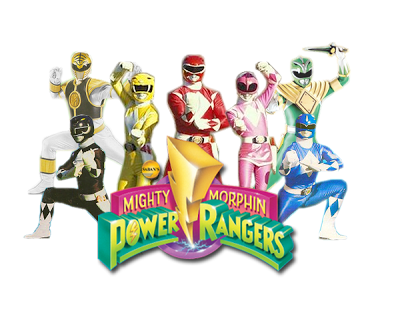
-
Season 2: Power Rangers Zeo
The Machine Empire comes to take over the Earth. With the acquisition of the Zeo Crystals
now with the power to become new Power Rangers with new profound powers, they set out to defeat the Machine Empire.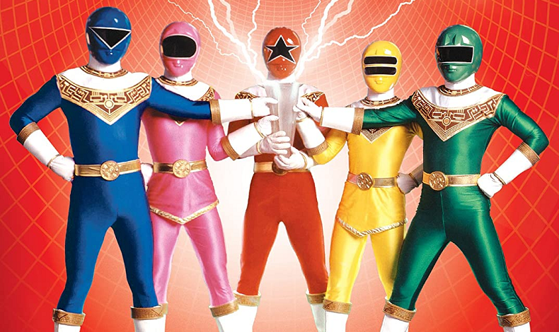
-
Season 3: Power Rangers Turbo
The evil villiness Divatox declares war on the new Power Rangers. With the powers of high powered vehicles
that are built to take on the forces of evil, the Power Rangers Turbo get into high gear.
-
Season 4: Power Rangers In Space
After countless villans invading and trying to take over the Earth. Our heroes take their adventure into the stars
to take on the Evil Dark Spector and to find their mentor Zordon. The Epic Battles begins.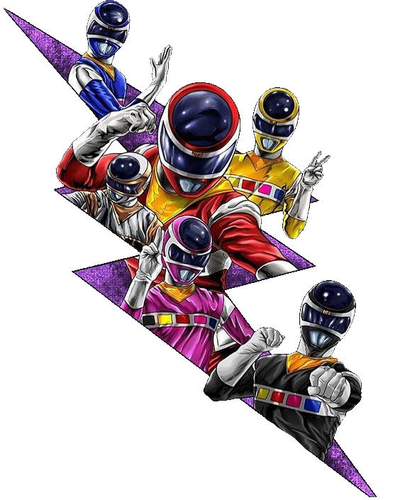
-
Season 5: Power Rangers Lost Galaxy
A new team of Power Rangers take on an alien army commanded by Trakeena to save the space ship Terra Venture, a ship
that has a city inside that is embarking on a journey to colonize on a distant planet. They must protect and ensure the safety of Terra Venture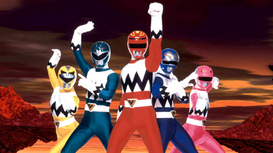
-
Season 6: Power Rangers Lightspeed Rescue
After thousands of years later the Demon Army under the command of Diabolico plan to destroy the entire human race.
The Lightspeed Rescue Power Rangers protect the world as the new Power Rangers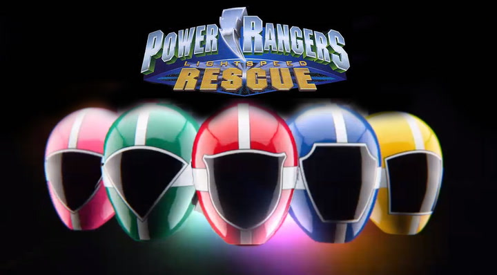
-
Season 7: Power Rangers Time Force
Mutants from the future escape to present day Earth to wreak havoc. The Power Rangers from the future come back to the present
to capture all the mutants and ensure that the past, present, and future are saved. They are The Power Rangers Time Force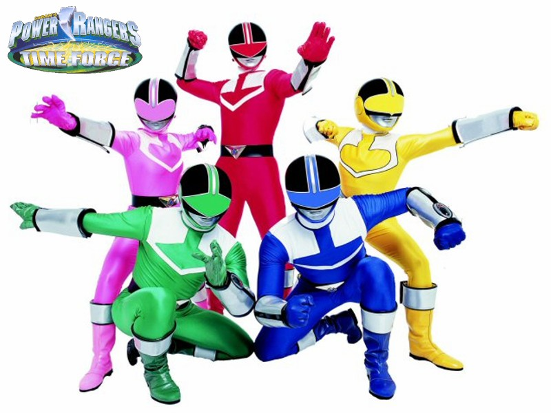
-
Season 8: Power Rangers Wild Force
There is a problem on Earth that is weakning the enviroment through pollution. The Master known as Master Org awakens to destroy nature.
The Wild Zords choose five brave warriors to defend the Earth. Who become the Power Rangers Wild Force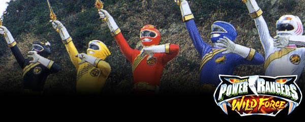
-
Season 9: Power Rangers Ninja Storm
A secret ninja academy where students are trained to becomes ninjas is threatened by an exiled student named Lothor who wants to conquer the world.
A new set of Power Rangers will emerge from the academy to save the world. They are The Power Rangers Ninja Storm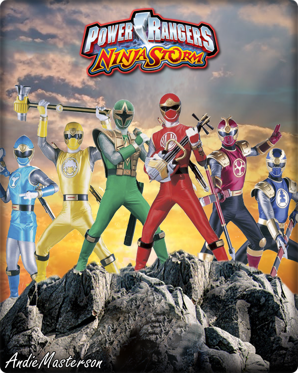
-
Season 10: Power Rangers Dino Thunder
The prehistoric villan knowm as Mesogog wants to revert the Earth back to the prehistoric age of dinosaurs. A veteran Ranger Tommy Oliver returns to recruit 3 teenagers
to harness the dino gems which has the energy of ancient dinosaur power. The come together to make They Power Rangers Dino Thunder.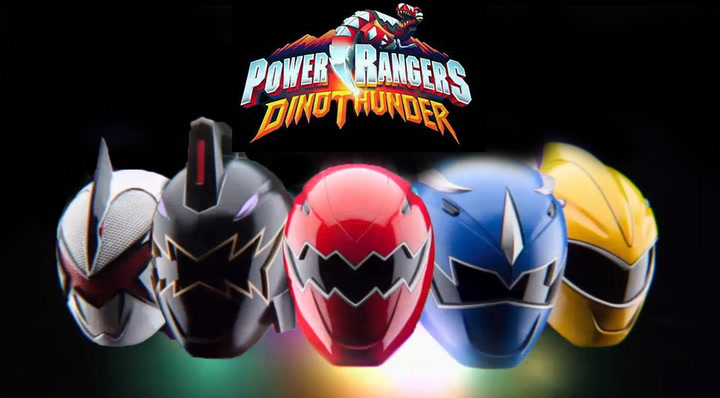
-
Season 11: Power Rangers SPD
In the future, the finest force of Power Rangers pride themselves to fight crime and punish the injustice.
They strive to save the Earth from the alien invasion commanded by Emperor Grumm. They are The Power Rangers S.P.D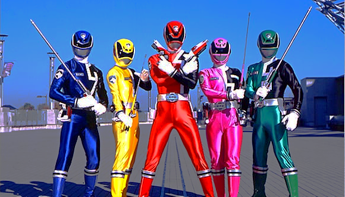
-
Season 12: Power Rangers Mystic Force
A Darkness will arise according to legend. Five brave teenage sorcerors are called to protect the Earth. With the power of magic and the guidance of their mentor Udonna.
The Rangers set out on a magical adventure that will lead them to battle dangerous beasts, defeat evil and meet new allies becoming the Power Rangers Mysitc Force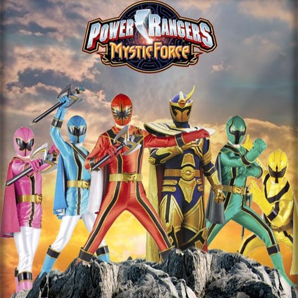